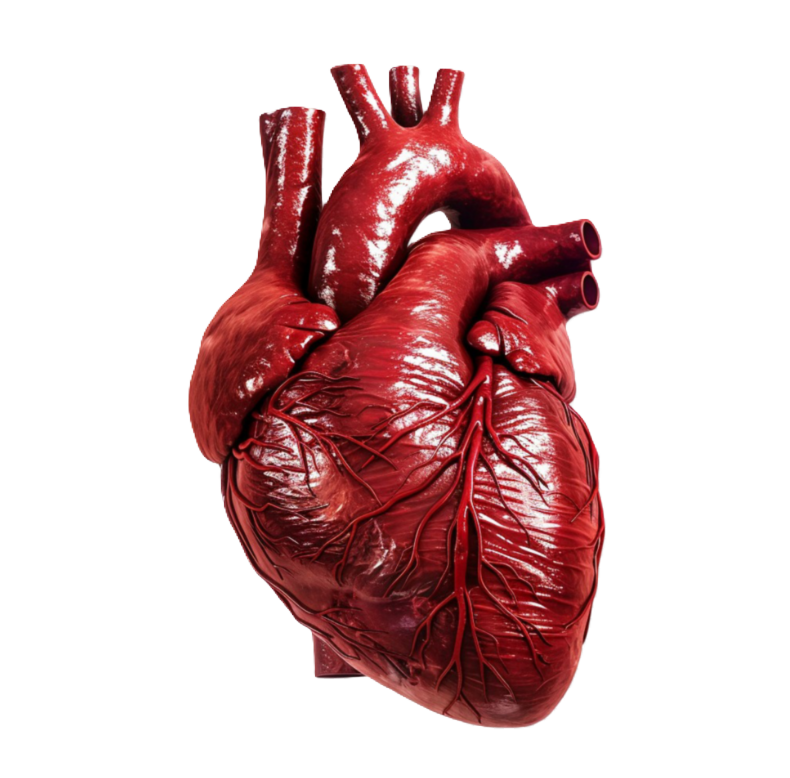
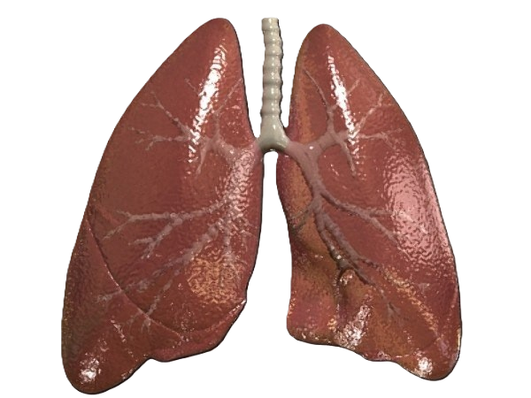
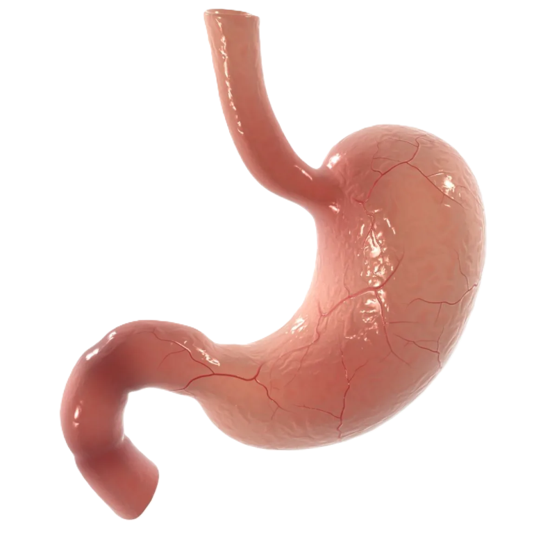
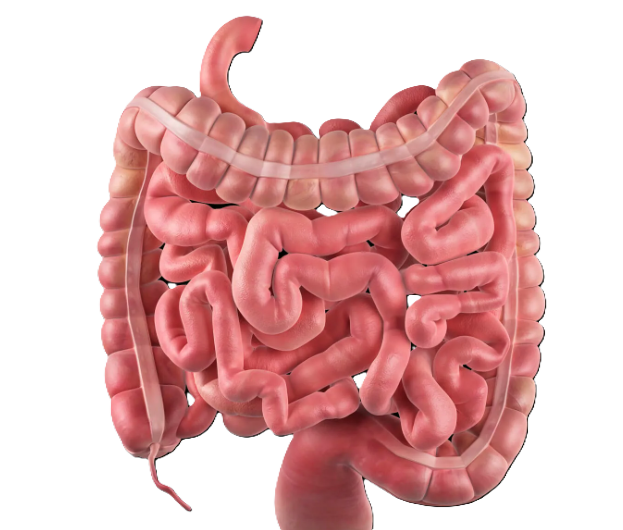
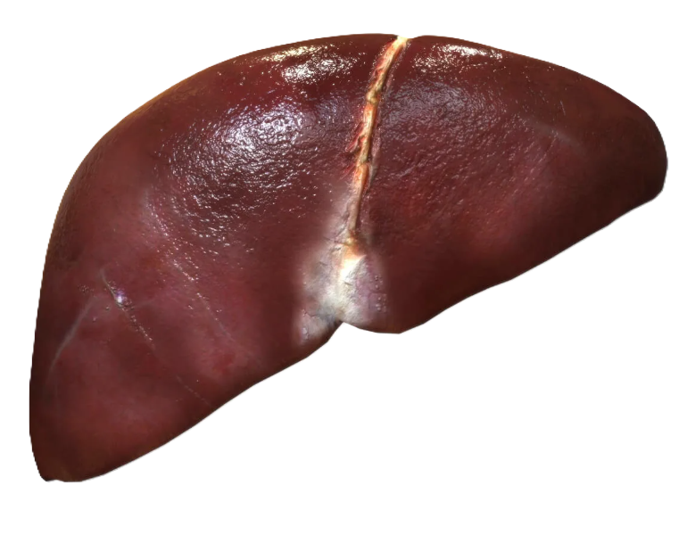
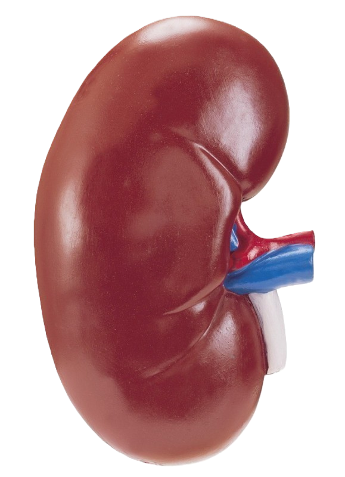

Наш ассортимент органов
Все органы проходят тщательную проверку и сертификацию. Гарантия качества - 1 год или до первой успешной трансплантации.
Головной мозг
Функции: контролирует работу всех органов и систем, обрабатывает сенсорную информацию, регулирует поведение, мышление, эмоции, память и речь.
Сердце 
Функция: перекачивает кровь по сосудам, обеспечивая доставку кислорода и питательных веществ ко всем органам и тканям.
Легкие 
Функции: обеспечивают газообмен между кровью и воздухом, насыщают кровь кислородом и выводят углекислый газ.
Желудок 
Функция: переваривает пищу путем механической обработки и воздействия желудочного сока, содержащего ферменты и соляную кислоту.
Кишечник 
Подразделяется на тонкий кишечник (двенадцатиперстная кишка, тощая кишка, подвздошная кишка), где осуществляется основное всасывание питательных веществ, и толстый кишечник (слепая кишка, ободочная кишка, прямая кишка), где формируются каловые массы и поглощается вода.
Печень 
Функции: участвует в обмене веществ, обезвреживании токсинов, синтезирует желчь, необходимую для пищеварения жиров, хранит гликоген и витамины.
Почки 
Функции: фильтруют кровь, удаляют отходы жизнедеятельности, поддерживают водно-солевой баланс, регулируют артериальное давление и кислотно-щелочной баланс.